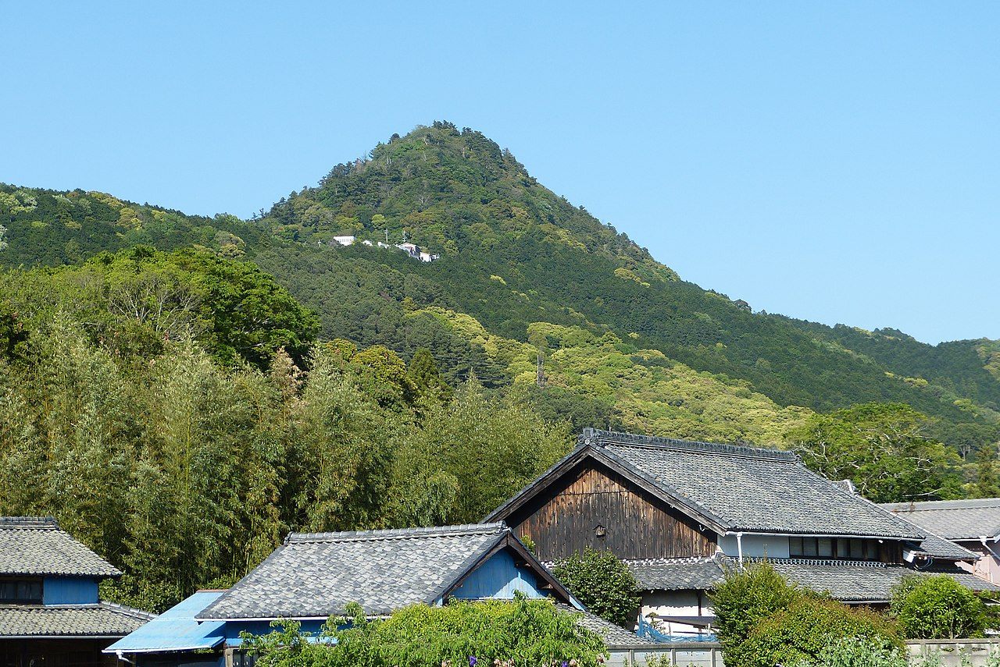

<!DOCTYPE html>
<html>
<head>
    <title>籠目のレイライン</title>
    <link rel="stylesheet" href="https://unpkg.com/leaflet@1.7.1/dist/leaflet.css" />
    <script src="https://unpkg.com/leaflet@1.7.1/dist/leaflet.js"></script>
    <style>
        #map {
            width: 100%;
            height: 100%;
            position: absolute;
            top: 0;
            left: 0;
            right: 0;
            bottom: 0;
        }
        .glowing-line-dark {
            stroke: rgba(173, 216, 230, 0.8);
            stroke-width: 2;
            fill: none;
            filter: drop-shadow(0px 0px 6px rgba(173, 216, 230, 0.5));
        }
        .glowing-line-normal {
            stroke: rgba(255, 115, 0, 0.8);
            stroke-width: 2;
            fill: none;
            filter: drop-shadow(0px 0px 6px rgba(216, 150, 100, 0.5));
        }
        .icon_dark {
            width: 14px;
            height: 14px;
            border-radius: 50%;
            box-shadow: 0px 0px 10px rgba(0, 0, 255, 0.5);
            background-color: rgba(27, 126, 225, 0.7);
        }
        .icon_normal {
            width: 14px;
            height: 14px;
            border-radius: 50%;
            box-shadow: 0px 0px 10px rgba(255, 0, 0, 0.5);
            background-color: rgba(255, 0, 0, 0.7);
        }
        .location-tooltip {
            background-color: rgba(0, 0, 0, 0.5); /* 半透明の黒 */
            color: white;
            font-size: 13px;
            padding: 4px;
            border-radius: 5px;
            border-color: rgba(255, 255, 255, 0.3); /* 半透明の黒 */
        }

        .popup-description-header {
            font-weight: bold;
            font-size: 17px;
        }
        .popup-description-content {
            font-size: 15px;
            max-width: 300px;
            overflow: hidden;
        }

        img {
            width: 200px;
            height: auto;
        }

        @media (max-width: 1024px) {
            .leaflet-control-layers {
                font-size: 22px;
            }
            .leaflet-control-layers-selector {
                width: 24px;
                height: 24px;
            }
            .leaflet-control-layers label {
                font-size: 22px;
                margin-bottom: 8px;
            }
            .icon_dark,
            .icon_normal {
                width: 28px;
                height: 28px;
            }

            .popup-description-header {
                font-size: 25px;
            }
            .popup-description-content {
                font-size: 22px;
            }

            .location-tooltip {
                font-size: 22px;
                padding: 6px;
            }
            .leaflet-bottom.leaflet-right {
                bottom: 20px;
                right: 20px;
            }
        }
    </style>
    <script>
        var locations = {
            // 東北・北陸
            '黒又山': { lat: 40.284, lng: 140.822,
                description: '人の手が加えられたピラミッドという説がある。縄文時代から信仰されている聖山。<image src="./images/黒又山.jpg">'},
            '靄山': { lat: 41.088, lng: 140.329,
                description: '黒又山に比べて知名度は低いが、地元では同様に人工の山ではないかと噂されている。<image src="./images/靄山.jpg">'},
            '姫神山': { lat: 39.844, lng: 141.247,
                description: 'ピラミッド型の山'},
            '早池峰山': { lat: 39.558, lng: 141.489,
                description: ''},
            '羽黒山': { lat: 38.702, lng: 139.983,
                description: '日本三大修験道場の一つ。この羽黒山を含む出羽三山は、6世紀に大和から逃れてきた蜂子皇子が開いたと伝えられている。その蜂子皇子を東北へ導いたのは八咫烏を思わせる「三本足の烏」であり、また上陸した場所の地名は「由良」である点など、出雲族・物部族の関連を伺わせる点が数多くある。'},
            '弥彦山': { lat: 37.706, lng: 138.808,
                description: '弥彦山を御神体とする越後一宮の彌彦神社は、二千四百年以上の歴史を有するとされる。<br><br>画像出典：<a href="https://niigata-kankou.or.jp/spot/7478#">にいがた観光ナビ</a><br><image src="./images/弥彦山.jpg">'},
            '唐松神社': { lat: 39.612, lng: 140.305,
                description: '物部氏と関係が深い神社。一子相伝で古くから受け継がれてきたとされる「物部文書」を所蔵している。'},
            '五葉山': { lat: 39.201, lng: 141.730,
                description: ''},
            '男体山': { lat: 36.768, lng: 139.491,
                description: '修験道の聖山<br><br>画像出典：<a href="https://www.nikko-kankou.org/spot/14">日光市公式観光ナビ</a><br><image src="./images/男体山.jpg">'},

            // 関東
            '富士山': { lat: 35.361, lng: 138.727,
                description: '日本を代表する霊山。'},
            '鶴岡八幡宮': { lat: 35.326, lng: 139.556,
                description: '鎌倉幕府を開いた源頼朝ゆかりの宮。「鎌倉」は「神倉」に通じ、熊野の神倉神社と夏至のレイラインで結ばれているのは偶然ではない。神倉神社のゴトビキ岩を崇敬し538段の石階段を寄進したのは他ならぬ頼朝だ。<br><br>この鶴岡八幡宮と頼朝・義経兄弟も天狗と縁が深い。頼朝は尾張熱田神宮の宮司家に生まれた。尾張氏は六芒星を神紋とする真名井神社（籠神社）の海部氏と並ぶ丹波国造の一族である。同じく尾張出身の織田信長もまた六芒星を神紋とする阿波忌部氏の末裔。その頼朝と信長の出生地も合わせて見てみると、なんの因果か、両者の出生地もまたレイラインで結ばれている。'},
            '三峯神社': { lat: 35.925, lng: 138.930,
                description: '奈良の大神神社と同じ三ツ鳥居がある関東随一の聖地。'},
            '御岩山': { lat: 36.630, lng: 140.591,
                description: '常陸国最古の霊山。発掘調査から信仰の歴史は縄文時代まで遡るとされる。中世には山伏（修験道）の聖地として栄えた。山伏・天狗・古代イスラエル人には繋がりがある。'},
            '麻賀多神社': { lat: 35.771, lng: 140.276,
                    description: '神紋は麻の葉紋様（六芒星）。房総半島は阿波忌部氏と関係が深く、安房（あわ）の地名も阿波忌部氏に由来する。岡本天明に日月神示が降りた当地として知られる。'},
            '仁右衛門島': { lat: 35.076, lng: 140.105,
                description: '治承4年（1180年）、石橋山の戦いに敗れた源頼朝が安房に逃れた際、島主の仁右衛門に助けられ、この島で平家軍から一時身を隠し、再挙を図ったと言い伝えられる。このとき仁右衛門に頼朝から「平野」姓と島周辺の漁業権が与えられたという。（<a href="https://ja.wikipedia.org/wiki/%E4%BB%81%E5%8F%B3%E8%A1%9B%E9%96%80%E5%B3%B6">wikipedia</a>）<br><br><b>頼朝はただ闇雲に逃げたのではなく、太陽神の加護を得るべく、意図的に鶴岡八幡宮から見て冬至の日の出の方角の最果てであるこの仁右衛門島に来たのではないだろうか？</b>'},

            // 北陸
            '白山': { lat: 36.158, lng: 136.772,
                description: '日本を代表する霊山。'},
            '気多大社': { lat: 36.926, lng: 136.767,
                description: ''},
            '尖山': { lat: 36.584, lng: 137.350,
                description: '<a href="https://www.tsm.toyama.toyama.jp/?tid=103672">画像出典：謎多き尖山|富山市科学博物館</a><br>山頂にストーンサークル状の石組みがあり、鏡などの古代の祭祀道具が出土している。'},
            '戸隠山': { lat: 36.770, lng: 138.055,
                description: ''},
            '飯縄神社奥社': { lat: 36.737, lng: 138.131,
                description: ''},

            // 中部
            '織田信長出生地': { lat: 35.200, lng: 136.744,
                description: '勝幡城'},
            '源頼朝出生地': { lat: 35.1265, lng: 136.9065,
                description: '頼朝は熱田神宮の宮司家で生まれている。'},
            '濱名惣社神明宮': { lat: 34.812, lng: 137.552,
                description: '元伊勢。倭姫命の巡幸地の中で極端に東に位置している。三ケ日原人で知られているように、縄文時代から浜名湖周辺は要所だった。その理由は海と湖が近く暮らしやすい事が関係していると思われる。若狭の三方五湖と琵琶湖にも同じ事が言える。この淡水湖と海、つまり「淡海」が古代人にとっての重要な要素であり、自然の恵みに感謝する精神から淡海は崇敬対象になっていったと考えられる。中世には琵琶湖は都に近い事から近淡海と呼ばれ、それに対して浜名湖は遠い事から遠淡海と呼ばれた。これが近江と遠江の語源になった。<br><br>倭姫命はなぜ大和から遠く離れたこの地まで巡幸に来たのか。その理由はもちろん記録にないが、若狭の御神島とこの地を結ぶレイライン上には、三方五湖、琵琶湖、浜名湖が全て乗る。この事実が古代天皇家の祭祀と密接に関係しているように私には思える。'},
            '伊勢神宮（内宮）': { lat: 34.460, lng: 136.726,
                description: '御正殿の北の荒祭宮のさらに北に、知る人ぞ知る磐座がある' },
            '朝熊ヶ岳': { lat: 34.461, lng: 136.782,
                description: '伊勢神宮にとって重要な聖山'},
            '瀧原宮': { lat: 34.367, lng: 136.425,
                description: '内宮の別宮。倭姫命が内宮よりも先に天照大御神を祀った場所という伝承がある。『倭姫命世記』によると、第11代垂仁天皇の皇女倭姫命が、宮川下流の磯宮より天照坐皇大御神（天照大神）を祀る地を探すために上流へ遡ったところ、宮川支流『大内山川』の流域に「大河の瀧原の国」という美しい場所があったので、草木を刈り新宮を建てた。だが天照皇大神の神意により、現在の内宮のある伊勢市宇治館町に新宮（五十鈴宮）を建てたため、天照坐皇大御神御魂を祀る別宮となったとされる。神宮ではこの説を採る。(<a href="https://ja.wikipedia.org/wiki/%E7%80%A7%E5%8E%9F%E5%AE%AE")>Wikipedia</a>)'},
            '御嶽山': { lat: 35.895, lng: 137.479,
                description: '日本を代表する霊山。御嶽神社に祀られる国常立尊は日月神示を降ろしたとされる神である。'},
            '大日山': { lat: 34.225, lng: 135.223,
                description: '全国でも最大規模の800基もの古墳を擁する岩橋千塚古墳群がある。'},
            '神倉神社': { lat: 33.722, lng: 135.983,
                description: '男根型の磐座、通称ゴトビキ岩を御神体とする。花窟神社の磐座と男女の関係にある。ここで毎年2月に行われるお燈祭りは、この男根型の磐座から白装束を着た男性たちが火を持ち一気に駆け降りるというもので、女人禁制。この祭りが何を象徴しているかは明らかだが、それを言葉にするのは野暮というもの。<br><br>鎌倉幕府を開いた源頼朝がゴゴトビキ岩まで続く石階段を築いたと伝わる。その鎌倉幕府の精神的支柱である鶴岡八幡宮が、ここから見て正確に夏至の日の出の方角にあるのは偶然ではないだろう。'},
            '花窟神社': { lat: 33.880, lng: 136.093,
                description: '女陰型の窪みを持つ巨大な磐座が御神体の最古級神社。イザナミとカグツチを祀っており「イザナミの墓所」とも言われる。神話においてイザナミは、カグツチを産んだ際に陰部に負った火傷が元で亡くなった。この花窟神社の磐座を女岩、神倉神社のゴトビキ岩を男岩として対の関係と見ることができる。<br><br>実際にはイザナミなどの神々や日本神話が生まれるよりも以前の縄文・弥生時代からこれらの磐座は御神体であり、日本神話が作られたのちに男女のシンボルという所からイザナミ神話と重ねられ、神社となったのではないかと推測する。'},
            '那智御瀧': { lat: 33.677, lng: 135.887,
                description: '熊野修験最高の聖地。'},
            '金櫻神社': { lat: 35.769, lng: 138.556,
                description: '金峰山を御神体とする神社'},
            '守屋山': { lat: 35.968, lng: 138.102,
                description: '諏訪には古代イスラエルの祭祀に酷似した風習が伝わっており、守屋山の「モリヤ」の名もまた古代イスラエルとの関係が噂されている。ユダヤ人の伝承では、ソロモン王が神殿を建てたエルサレムのシオン山がモリヤであるとされる。'},
            '金山巨石群': { lat: 35.755, lng: 137.159,
                description: '五千年前に建造されたと推定される、暦を観測する機能を持つ巨石群。数十年前に在野の研究者によって発見され、縄文カレンダーと呼ばれている。岩屋岩陰遺跡とも言う。<br>'},
            '金華山': { lat: 35.433, lng: 136.781,
                description: '阿波忌部氏の末裔である織田信長が天下統一に向けての足がかりにした本拠地。古くは稲葉山（因幡山・伊奈波山）と呼ばれており、やはり忌部氏と関係が深い。'},
            '伊吹山': { lat: 35.418, lng: 136.407,
                description: '古くから霊峰とされ、『古事記』『日本書紀』においてはヤマトタケル（日本武尊）が東征の帰途に伊吹山の神を倒そうとして返り討ちにあったとする神話が残されている（<a href="https://ja.wikipedia.org/wiki/%E4%BC%8A%E5%90%B9%E5%B1%B1">wikipedia</a>)'},
            '至恩郷跡地': { lat: 35.011, lng: 136.478,
                description: '日月神示を自動書記した岡本天明が開いた地。<br>古代イスラエルの聖地「シオンの丘」にちなんで名付けられた。'},
            '石巻山': { lat: 34.790, lng: 137.458,
                description: 'かつては神山と書いて「みわやま」と呼ばれていた事からもわかるとおり、奈良の三輪山と深い関係があると言い伝えられる聖山。富士山と皇大神宮（内宮）を結ぶ直線上にあり、真北には御嶽山がある。<br><br><b>2014年に私は不思議な経緯でこの山に行き、中腹の祠で六芒星が描かれた鏡を見た。それ以来、心の底から突き動かされるような衝動にかられ六芒星と古代の探究に取り憑かれて今に至る。何が私にそうさせているのかいまだに自分でもわからない。三輪山に比べれば知名度は低い山だが、個人的に極めて重要な山である。</b><br>'},
            '秋葉山本宮': { lat: 34.981, lng: 137.866,
                description: '天狗と関係が深い秋葉信仰の本宮。秋葉山を御神体とする。<br><br>秋葉山三尺坊は遠江天狗の総帥といわれるほど有名な天狗ですが、彼の正体は信州戸隠生まれの修験者でした。<a href="https://tohyamago.com/experience/akibashinkou/">秋葉信仰とは</a>'},

            // 近畿
            '安土城': { lat: 35.155, lng: 136.139,
                description: '信長が築いた城。<a href="https://ja.wikipedia.org/wiki/%E5%AE%89%E5%9C%9F%E5%9F%8E">安土城の本丸御殿は、天皇を迎えるための施設だったという可能性が指摘されている</a>'},
            '畝傍山': { lat: 34.492, lng: 135.785,
                description: '大和三山'},
            '耳成山': { lat: 34.51457, lng: 135.8055,
                description: '大和三山'},
            '天香具山': { lat: 34.495, lng: 135.819,
                description: '大和三山'},
            '三輪山': { lat: 34.535, lng: 135.867,
                description: '『記紀神話』によれば、大国主神とともに国造りを行っていた少名毘古那神が常世の国へ去り、大国主神がこれからどうやってこの国を造って行けば良いのかと思い悩んでいた時に、海の向こうから光り輝く神が現れて、我を倭の青垣の東の山の上に奉れば国造りはうまく行くと言い、大国主神はこの神を祀ることで国造りを終えた。この山が三輪山とされる。(wikipedia)'},
            '御神島': { lat: 35.638, lng: 135.805,
                description: ''},
            '真名井神社': { lat: 35.586, lng: 135.198,
                description: '元伊勢・籠神社の奥宮。神紋は六芒星の中に太陽と月の印。<br>'},
            '青龍山': { lat: 35.211, lng: 136.292,
                description: '個人的な話になるが、私が多賀大社に初めて参拝に訪れた時。この青龍山が妙に輝いて見えた。どうしても気になったのでその足で山頂まで行った。山頂の磐座にはペトログリフ様の線刻があった。私の体感として多賀大社よりも重要に思えて仕方がない。この青龍山のふもとの胡宮神社と多賀大社はどちらもイザナギ・イザナミを祀る。'},
            '赤神山': { lat: 35.120, lng: 136.181,
                description: '阿賀神社／太郎坊宮。太郎坊とは日本一の大天狗の名であり、天照大御神の子、天忍穂耳命の事でもある。'},
            '日前神宮': { lat: 34.228, lng: 135.202,
                description: '三種の神器の八咫鏡と同等とされる神鏡を御神体とする。夏至の日の出の方角には大和三山があり、鏡はその大和三山の天香山から採取した銅を用いて作られた。<br><br>同じレイラインの東の果てにある御岩山と常陸国をひたち（日が立つ地）、すなわち太陽神を象徴する地と見れば、そこから反対に見て冬至の日の入りの方角にあるこの日前神宮は、太陽神に向かい合うことになる。これは天照大御神以前の太陽神であるアマテル=饒速日命と瀬織津姫の関係である。原始神道の和御魂（饒速日命）と荒御魂（瀬織津姫）の精神が、言葉ではなく「印」として、まさにここに残されていることを私は霊的な気付きとして知った。'},
            '沖の白石': { lat: 35.2935, lng: 136.124,
                description: '琵琶湖のほぼ中心につきだしている４個の岩。一番高い所で約１４ｍほどあり、この辺りの水深が約８０ｍであることから、岩の全長は１００ｍを超すと言われている。(<a href="https://shiga.uminohi.jp/information/%E7%90%B5%E7%90%B6%E6%B9%96%EF%BC%94%E5%B3%B6%E3%81%AE%E3%81%B2%E3%81%A8%E3%81%A4%E3%80%8C%E6%B2%96%E3%81%AE%E7%99%BD%E7%9F%B3%E3%80%8D/">ソース</a>)'},
            '鞍馬山': { lat: 35.124, lng: 135.771,
                description: ''},
            '愛宕山': { lat: 35.060, lng: 135.634,
                description: ''},
            '金鳥山': { lat: 34.740, lng: 135.277,
                description: '科学者の楢崎皐月氏がこの山で実験中、平十字と名乗る人物と出会い、謎の文字で記述された文献を写本することを許された場所。カタカムナ文献と呼ばれている。'},
            '玉置山': { lat: 33.927, lng: 135.834,
                description: '紀州熊野三山の奥宮であり、日本三大修験に数えられる大峰山系の最南端に位置する霊山。主祭神は国常立尊。'},
            '日室ケ嶽（岩戸山）': { lat: 35.433, lng: 135.142,
                description: ''},

            // 四国
            '金刀比羅宮': { lat: 34.188, lng: 133.802,
                description: '物部氏と関係が深い神社。「こんぴらさん」という呼び名の方がよく知られている。'},

            // 中国
            '熊山遺跡': { lat: 34.754, lng: 134.120,
                description: ''},
            '経島': { lat: 35.431, lng: 132.627,
                description: ''},
            '素鵞社': { lat: 35.403, lng: 132.6855,
                description: '出雲大社御本殿の真後ろに建つ。大国主の親神であるスサノオを祀る。'},
            '葦嶽山': { lat: 34.843, lng: 133.126,
                description: ''},
            '日向石神社跡': { lat: 34.711, lng: 134.141,
                description: '祇園天王磐座とストーンサークル。祇園天王はスサノオと習合された牛頭天王を連想する。また、ここの地名は磯上（いそかみ）であり、石上布都魂神社にも近い事から物部氏との関連性が高いと考えられる。'},
            '熊山遺跡': { lat: 34.754, lng: 134.120,
                description: 'ピラミッドのような石積み。いつ誰が何のために建造したのか一切不明。<br>出雲の経島と熊野の玉置山を結ぶレイライン上に位置している。現在出雲といえば出雲大社が有名だが、出雲國一之宮はスサノオを祀る熊野大社であり、スサノオの子の大国主を祀る出雲大社よりも熊野大社の方が社格は上。一方の玉置山もまた紀州熊野三山の奥宮とされる。つまりこの熊山遺跡を挟んで熊野-熊山-熊野と並んでいるのである。さらに、漢字は違うが、同じレイライン上にある日前（ひのくま）神宮もまた「くま」と発音する。<br><br>以下は<a href="http://www.kumanotaisha.or.jp/q&a.htm">熊野大社HP</a>から引用。<br>Q.紀州の熊野との関係は？<br>A.一説には熊野大社の「元宮」から御分霊を紀州の熊野へ遷して信仰を広めたものが紀州の熊野で、その信仰の影響を受けて中世のいつの頃からか熊野大社でも上之宮、下之宮の二社の形をとり上之宮に紀州の熊野の神様をお祀りしていたのだと言われていますが、定かではありません。'},

            // 九州
            '英彦山': { lat: 33.532, lng: 130.928,
                description: '山形県の羽黒山、奈良県の熊野大峰山と並び、<b>日本三大修験の霊山</b>として知られている。祭神が天照大御神の御子、天忍穂耳命であることからかつて「日子山」と呼ばれていたことが名の由来。'},
            '穿戸岩': { lat: 32.850, lng: 131.134,
                description: '写真映えする神社としてSNSでも話題の上色見熊野座神社。その神殿後方にある縦横10ｍ以上の大風穴。主祭神はイザナギ・イザナミ。'},
            '大御神社': { lat: 32.411, lng: 131.649,
                description: '<a href="https://oomijinja.com/">公式サイト</a><br>大御神社は、<b>日向のお伊勢さま</b>と呼ばれ親しまれています。大海原を見渡す絶景の柱状岩上に建つ大御神社は、古くは<b>天照皇太神宮</b>と言われ、天孫瓊瓊杵尊が皇祖天照大御神を奉祀して、平安を祈念されたと云われています。また、神武天皇御東征の砌、天皇は当神社にご参拝になり武運長久と航海安全を祈願されたと伝えられています。'},
        };

        var connections = [
            // 
            ['伊勢神宮（内宮）', '富士山'], ['富士山', '御嶽山'], ['畝傍山', '三峯神社'],
            ['三峯神社', '御岩山'], ['神倉神社', '花窟神社'], ['花窟神社', '御嶽山'], ['御嶽山', '黒又山'],
            // 
            ['尖山', '真名井神社'], ['真名井神社', '英彦山'],
            ['麻賀多神社', '戸隠山'], ['真名井神社', '至恩郷跡地'], ['真名井神社', '日前神宮'],
            ['鶴岡八幡宮', '守屋山'],
            ['御嶽山', '金山巨石群'], ['金山巨石群', '伊吹山'], ['金鳥山', '青龍山'],['青龍山', '金華山'],
            ['三峯神社', '尖山'],['鶴岡八幡宮', '仁右衛門島'],['鶴岡八幡宮', '那智御瀧'],
            ['御神島', '濱名惣社神明宮'],
            ['伊吹山', '沖の白石'], ['沖の白石', '鞍馬山'], ['鞍馬山', '愛宕山'], ['愛宕山', '金刀比羅宮'],
            ['金鳥山', '神倉神社'],['金刀比羅宮', '穿戸岩'],['玉置山', '経島'],
            ['畝傍山', '大日山'], ['大日山', '大御神社'],
            ['気多大社', '朝熊ヶ岳'],
            ['畝傍山', '天香具山'], ['畝傍山', '耳成山'], ['耳成山', '天香具山'],
            ['御嶽山', '気多大社'],['御嶽山', '石巻山'],
            ['御嶽山', '男体山'], ['男体山', '弥彦山'],
            ['五葉山', '靄山'],
            ['英彦山', '大御神社'],
        ];

        const mobileWidthMax = 768;
        let map;
        let layerControl;
        let markers = [];
        let lines = [];
        let tooltips = [];
        let darkMode = false;
        let hexMarker; // 六芒星マーカー
        let isMobile;

        function init() {
            isMobile = window.matchMedia('(max-width: 1024px)').matches;

            map = L.map('map', {zoomControl:false});
            map.setView([35.0, 137.0], 7.5);
            
            // 地図レイヤーの追加
            const tileLayerDark = L.tileLayer('https://{s}.basemaps.cartocdn.com/dark_all/{z}/{x}/{y}{r}.png',{attribution: '&copy; OpenStreetMap contributors'});
            const tileLayerNormal = L.tileLayer('https://{s}.tile.openstreetmap.org/{z}/{x}/{y}.png',{attribution: '&copy; OpenStreetMap contributors'});
            var baseMaps = {
                "ダークモード" : tileLayerDark,
                "標準モード" : tileLayerNormal,
            };
            tileLayerNormal.addTo(map);   //　デフォルトは標準モード

            // 名称一覧
            Object.entries(locations).forEach(([name, loc]) => {
                var t = L.tooltip({
                    permanent: true,
                    direction: 'top',
                    className: 'location-tooltip',
                    offset: [0, -10]  // ここで位置を調整
                }).setLatLng([loc.lat, loc.lng]).setContent(name);
                tooltips.push(t);
            });

            // 六芒星
            const center = map.getCenter();
            hexMarker = L.marker([center.lat, center.lng], {icon: hexagramIcon(), title:"麻賀多神社の神紋", draggable: true, opacity: 0.5});
            hexMarker.name = "六芒星"; // ここで指定した名前はoverlayadd/overlayremoveイベントのe.layer.nameで取得可能

            //　オーバーレイレイヤーに登録
            var tooltipLayer = L.layerGroup(tooltips);
            var hexLayer = L.layerGroup([hexMarker]);
            var overlayLayers = {
                "名称一覧表示": tooltipLayer,
                "六芒星表示": hexMarker
            };

            layerControl = L.control.layers(baseMaps, overlayLayers, {collapsed:false}).addTo(map);

            // ベースレイヤー（地図）が切り替わった時に呼ばれる
            map.on('baselayerchange', function(e) {
                darkMode = !darkMode;
                updateMarkersAndLines();
            });

            map.on('overlayadd', function(e) {
                if (e.layer.name == "六芒星") {
                    // 六芒星を画面中央に戻す
                    const center = map.getCenter();
                    hexMarker.setLatLng(center);
                }
            });

            map.on('overlayremove', function(e) {
            });

            updateMarkersAndLines();
        }

        function updateMarkersAndLines() {
            // 登録済みの要素を一旦消去
            markers.forEach(marker => map.removeLayer(marker));
            markers = [];
            lines.forEach(line => map.removeLayer(line));
            lines = [];
            tooltips.forEach(tooltip => map.removeLayer(tooltip));
            tooltips = [];

            var divicon;
            var linestyle;
            var iconsize = 14;
            if (isMobile) iconsize = 28;    // cssの.icon_dark/normalのサイズに合わせる

            if (darkMode) {
                divicon = L.divIcon({ className: 'icon_dark', iconSize: iconsize});
                linestyle = 'glowing-line-dark';
            } else {
                divicon = L.divIcon({ className: 'icon_normal', iconSize: iconsize});
                linestyle = 'glowing-line-normal';
            }

            // 登録
            Object.entries(locations).forEach(([name, loc]) => {
                var m = L.marker([loc.lat, loc.lng], {icon: divicon}).addTo(map);
                var html_pu = `<div class="popup-description-header">${name}</div>
                    <div class="popup-description-content">
                        ${loc.description || '説明がありません'}
                    </div>`;
                m.bindPopup(html_pu, {minWidth: 300});
                markers.push(m);
            });

            connections.forEach(([from, to]) => {
                var l = L.polyline([locations[from], locations[to]], { className: linestyle}).addTo(map);
                lines.push(l);
            });
        }

        function hexagramIcon() {
            var hex = L.icon({
                iconUrl: './images/麻賀多神社の神紋.png',
                iconSize: [240, 240]
            });
            return hex;
        }

    </script>
</head>
<body onload="init()">
    <div id="map"></div>
</body>
</html>
